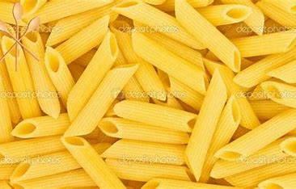
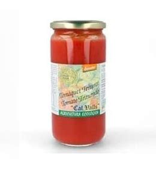
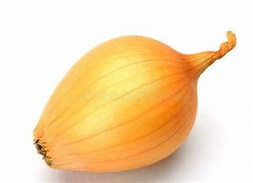
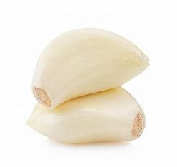
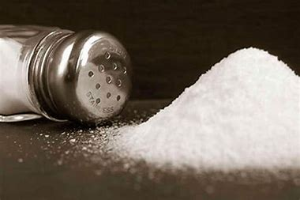
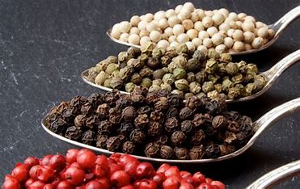
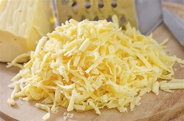

Macarrones con tomate
- 200 gramos de macarrones

- 1 lata de tomate triturado

- 1 cebolla pequeña

- 2 dientes de ajo

- Dos cucharadas de aceite de oliva.

- Sal al gusto

- Pimienta al gusto

- Queso rallado para decorar.

Cómo hacer la receta de Macarrones con Tomate
Comienza por pelar y picar la cebolla y los dientes de ajo. Procura que los trozos sean pequeños para que se mezclen bien con la salsa de tomate.
A continuación, calienta el aceite de oliva en una sartén a fuego medio. Cuando esté caliente, añade la cebolla y el ajo picados. Cocina hasta que la cebolla esté transparente, removiendo de vez en cuando para que no se quemen.
Añade entonces el tomate triturado a la sartén. Remueve bien para mezclarlo con la cebolla y el ajo. Deja que se cocine a fuego lento durante unos 20 minutos para que los sabores se mezclen bien. Recuerda remover de vez en cuando.

Mientras la salsa se cocina, pon a hervir agua en una olla. Cuando el agua esté hirviendo, añade una pizca de sal y luego los macarrones. Cocina según las instrucciones del paquete hasta que estén al dente.

Cuando los macarrones estén listos, escúrrelos y añádelos a la sartén con la salsa de tomate. Mezcla bien para que todos los macarrones queden cubiertos con la salsa.
Finalmente, añade sal y pimienta al gusto y remueve bien. Si lo deseas, puedes decorar con un poco de queso rallado antes de servir.